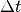
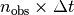
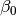

Welcome to DESPM’s documentation!¶
Indices and tables¶
Database and auxiliary tools¶
Data Management¶
Author: Pedro Bernardinelli
Original: March 7, 2017 - Current: May 16, 2017
Data management and auxiliary functions for some of the modules and scripts developed so far.
-
data_management.add_gnom(file, ra_0=0, dec_0=0)[source]¶ Opens and reads a (astropy Table) file and adds the gnomonic coordinate projection
-
data_management.add_group_information(file_name, friends_list, offset=0, name='')[source]¶ Given a FoF list of clusters, adds to the original table a “MATCH_ID” column with the group the point belongs to, starting with ‘offset’ as the first value. If file_name is a table object (instead of a string), saves to file named in name
-
data_management.coadd_gnomonic(filename, ra_0, dec_0)[source]¶ Adds a Gnomonic projection for the co-add catalog
-
data_management.copy_data_gnom(file)[source]¶ Opens and reads a (astropy Table) file, returns the Gnomonic projection of RA, DEC
-
data_management.merge_tables(table1, table2, name)[source]¶ Merges two different tables (i.e.: coadd and finalcut)
-
data_management.one_arc_sec(ra_0, dec_0)[source]¶ Finds one arc sec in for the Gnomonic projection centered around RA_0, DEC_0
Query¶
Author: Pedro Bernardinelli Original: April 7, 2017 Current: June 1, 2017 Non-Jupyter version of the DESDM query for a given RA, DEC region, downloading information from multiple tables in the database. See “DESDM_DB_QUERY” Jupyter notebook for more details May 2, 2017: Added an analogous query for the coadd catalog, allowing us to search for the color of a given object. Still not sure if this is going to work the way I intend it to, but let’s see.
June 1, 2017: Some of the old/less optimal versions of the code were removed. This file is only keeping the most up-to-date versions of each function, ready to use. Everything else was moved to the appropriate section in old.py
-
query.query_coadd(RA_min, RA_max, DEC_min, DEC_max, cursor, zonetable='rbutler.zone_tiles@dessci', zone=None)[source]¶ Queries the coadd for a given RA,DEC max and min
-
query.query_coadd_info(tile, cursor, zonetable='rbutler.zone_tiles@dessci', zone=None)[source]¶ Queries the coadd on the tilename
-
query.query_coadd_tile(tile, cursor, zonetable='rbutler.zone_tiles@dessci', zone=None)[source]¶ Queries the coadd on the tilename
Exposure Visualization¶
Author: Pedro Bernardinelli Original: Jul 27, 2017
This is a visualization tool for DES exposures (SINGLE EPOCH) and COADD images. It uses astropy’s WCS features to use world coordinates in matplotlib’s images, which is super convenient. One n by n image is made for single epoch, where n is round(sqrt(exposures in the region)) + 1 and 3x2 for coadds (as we have 5 images). We require the actual files for each image, which is pretty annoying… The contrast level of the image is defined by Gary’s clippedMean. If it fails, we try using astropy’s ZScaleInterval. We use the SCI extension of the FITS image, as we want.
-
show_exp.exp_data(match, tile)[source]¶ Slow as hell way of finding the exposures in which the detections were made
-
show_exp.find_exp_coords(ra, dec, file_dir, im_type)[source]¶ For all exposures, finds if the given RA, DEC is inside the exposure region. Returns immasked and segmaps OR coadd filenames for these images
-
show_exp.get_exp(data, output)[source]¶ For a given MATCH_ID, finds all the exposures in which it appears and makes an EXPOSURES column that can be read easily by the other routines in this code This is saved in the output file
-
show_exp.make_table(file_dir)[source]¶ Lists all single-epoch EXPNUM + CCDNUM and image type (image or segmap) for all files in a given directory
-
show_exp.show_images_coadd(data_point, file_dir, folder)[source]¶ Coadd visualization feature. For a given {RA, DEC}, it finds which tile it is part of and generates the image centered around this point. Also produces a 0.001 deg Spherical circle centered around this point, as the actual presented region is bigger than that. It fails for some images and I don’t know why.
-
show_exp.show_images_point(data_point, file_dir, folder, segmap=True, exposure_name=True)[source]¶ Single epoch visualization feature. For a given {RA, DEC}, it finds which exposures covered this part of the sky and generates the image centered around this point. Also produces a 0.001 deg Spherical circle centered around this point, as the actual presented region is bigger than that. Images in which it was detected have a (D) in the title, and the circle is of a different color. It fails for some images and I don’t know why.
-
show_exp.show_images_se(data_point, file_dir, folder, segmap=True, exposure_name=True)[source]¶ Single epoch visualization feature. For a given {RA, DEC}, it finds which exposures covered this part of the sky and generates the image centered around this point. Also produces a 0.001 deg Spherical circle centered around this point, as the actual presented region is bigger than that. Images in which it was detected have a (D) in the title, and the circle is of a different color. It fails for some images and I don’t know why.
Run Script¶
Author: Pedro Bernardinelli
Original: April 19, 2017 - Current: June 1, 2017
- Little script to run everything done so far but the query. It opens a .fits file fresh from DESDM, applies Gary’s astrometric solutions, runs a FoF and, finally, returns a .FITS file with a bunch of new information:
- NEW_RA : RA after astrometric solution
- NEW_DEC : DEC after astrometric solution
- X_GNOM : x gnomonic coordinate centered on RA_0, DEC_0
- Y_GNOM : y gnomonic coordinate centered on RA_0, DEC_0
- PROJ_FLAG : identifier for the astrometric solutions. 0 if there’s one, 1 if there wasn’t one
- MATCH_ID : group of points returned by FoF for a given [linking] length
This also merges the COADD catalog with the FINALCUT one. We can also run the query from this file, which is convenient. This is the “control panel” of the whole program.
May 20, 2017: Changed the way distance scales on the gnomonic projection are used.
June 1, 2017: Some of the old/less optimal versions of the code were removed. This file is only keeping the most up-to-date versions of each function, ready to use. Everything else was moved to the appropriate section in old.py
-
run_scr.query_and_run(tilename, save_folder, zone, zone_file, nodes=4)[source]¶ Executes both the coadd query for a given tilename and runs the whole friends of friends + projection pipeline
-
run_scr.run(zone_file, finalcut_file, coadd_file, file_prefix, RA_0, DEC_0, offset=0, cores=4)[source]¶ Runs the group matching pipeline, as follows:
- Projects the catalogs to a gnomonic coordinate system centered around (RA_0, DEC_0)
- First friends of friends, with catalog world coordinates
- Finds the color for all coadd-matched objects. Assigns the average color of the catalog to the no-coadd matches
- Projects the catalog for and re-calculates the world coordinates using Gary’s astrometric solutions
- Runs a second friends of friends, with these results as output
- Arguments:
- zone_file (str): the zone WCS file for the astrometric solutions
- finalcut_file (str): the Finalcut/Single Epoch fits catalog coming from DESDM SQL
- coadd_file (str): the Coadd catalog from DESDM
- file_prefix (str): Prefix for the file to be saved (for example, the tilename)
- RA_0 (float): One of the coordinates for the gnomonic projection
- DEC_0 (float): The second center coordinates
- offset (int): Offset for the MATCH_ID
- nodes (int): number of cores for MP parallelization
-
run_scr.run_fof(file_name, l, offset=0)[source]¶ Copies the gnomonic coordinates, runs the friends of friends and returns a catalog with the added MATCH_ID
Example code:
- This is the format for running on each tile of a zone, including the query:
tiles = ["DES0135-0416", "DES0135-0458", "DES0136-0541", "DES0136-0624",
"DES0137-0707", "DES0137-0250", "DES0137-0333", "DES0138-0416",
"DES0138-0458", "DES0139-0541", "DES0139-0624", "DES0140-0250",
"DES0140-0707", "DES0140-0333", "DES0140-0416", "DES0141-0458",
"DES0141-0541", "DES0142-0624", "DES0143-0250", "DES0143-0707",
"DES0143-0333", "DES0143-0416", "DES0144-0458", "DES0144-0541",
"DES0145-0624", "DES0146-0250", "DES0146-0707", "DES0146-0333",
"DES0146-0416", "DES0147-0458", "DES0147-0541", "DES0148-0624",
"DES0148-0250", "DES0148-0707", "DES0149-0333", "DES0149-0416",
"DES0150-0458", "DES0150-0541", "DES0151-0624", "DES0151-0250",
"DES0151-0707", "DES0152-0333", "DES0152-0416", "DES0152-0458",
"DES0153-0541", "DES0154-0624", "DES0154-0250", "DES0154-0707"]
for i in tiles:
print i
query_and_run(i, folder+'tiles/', '29', folder+'zone029.astro')
- This is the format for running on a single finalcut + coadd pair:
run(folder+'zone029.astro', folder+'zone29_finalcut.fits',
folder+'zone29_coadd.fits', folder+'zone29_', RA_0, DEC_0, nodes)
Catalog creation¶
Friends of Friends¶
Author: Pedro Bernardinelli
Original: March 7, 2017 - Current: June 1, 1017
Friends of friends implementation using kD trees. The algorithm finds all points within a certain linking length of each other and then proceeds to match everyone that has a common ‘friend’, returning a list of all the clusters of points.
Usage: the run function takes as an input the data-set + distance and returns the clustered data.
random_clustering and plot provide a way to test the algorithm with a random data set, creating n points in a radius r
May 22, 2017: Now there’s both a ‘set’ and a ‘numpy array’ implementation. They are equivalent.
June 1, 2017: Some of the old/less optimal versions of the code were removed. This file is only keeping the most up-to-date versions of each function, ready to use. Everything else was moved to the appropriate section in old.py
-
friends_of_friends.find_friend(data, length)[source]¶ Uses scipy’s kDTree functionalities to find all friends (points within a given distance of each other)
-
friends_of_friends.friends_of_friends(list_friends)[source]¶ Main function of the code. Using a mutating list of friends, finds all sets that overlap with each other and joins them together. New version, for loop changed for set operations, significantly faster
-
friends_of_friends.friends_of_friends_np(list_friends)[source]¶ Main function of the code. Using a mutating list of friends, finds all sets that overlap with each other and joins them together. New version, for loop changed for set operations, significantly faster Written in numpy arrays instead of sets. It should consume less memory, but there’s not that much of a change in performance
-
friends_of_friends.plot(a, length)[source]¶ Given a data-set a, runs the FoF and color-codes the results in a plot. (testing function)
 . (testing function)
. (testing function)Linear Fit¶
Author: Pedro Bernardinelli
Original: April 20, 2017 - Current: June 1, 2017
Realizes a proper motion fit given the catalog produced by the friends of friends algorithm. This linear fit is simple and does not take into account correlated measurements.
Note that this file does a lot more than just linear fits. In fact, the most recent linear fit mechanic is currently implemented somewhere else. The big thing about this file is the Group class. This is a slow, but easy to use method of finding something with a given MATCH_ID.
May 2, 2017: Created a new mechanic using the Group class to find the mean RA,DEC and compare to this position in the co-add catalog, thus giving the color.
May 16, 2017: Updated version of the color information, it uses a previously run FoF to match coadd color to finalcut. Added a way to get the flux from the coadd and compare to the finalcut flux. Will change to magnitude soon
June 1, 2017: Some of the old/less optimal versions of the code were removed. This file is only keeping the most up-to-date versions of each function, ready to use. Everything else was moved to the appropriate section in old.py
-
class
linearfit.Group(file_name, group_id)[source]¶ Creates a group consisting of all detections with a given MATCH_ID in a given file
-
linearfit.add_color(file_name, output_file)[source]¶ This is to be used after the first FoF run of the data! This should be used in place of create_color_catalog. This adds the color of each detection according to the coadd match found
-
linearfit.create_catalog(file_name, output_file, plot=False)[source]¶ Computes the proper motion for all n_obs > 2 in a given file and returns a catalog of all the values
-
linearfit.fit(x, y, t, sigma)[source]¶ Does a linear fit for r = r_0 + v*t, where r = (x,y) in gnomonic coordinates and t is the observation time. Sigma is the error in each observation, given by the error in the ellipsis of the object, as measured by the telescope Returns (x0, v_x), rho_x (cov matrix), (y0, v_y), rho_y
Projections¶
Author: Pedro Bernardinelli
Original: April 12, 2017 - Current: June 1, 2017
Applies Gary’s astrometric solutions using PixelMapCollection from pixmappy (https://github.com/gbernstein/pixmappy).
The general idea is that a given observation in a certain CCD has a given (unique) EXPNUM and CCDNUM. These are mapped out in a .astro file that has a certain solution that transforms the pixel coordinates to more precise position measurements (i.e. RA, DEC). This code also reprojects the solution to a gnomomic coordinate system centered at a given RA_0, DEC_0 (e.g. the center of the region to be analysed), so we can use this solution easily with a FoF code.
The format for the solutions is of the form N$EXPNUM/$CCD, where $CCD is the CCD identifier in the DECam. There is a requirement for number of cores to be used. This is set to be 4 by default, given my desktop’s computing power. This can be changed in calling the run method.
June 1, 2017: Some of the old/less optimal versions of the code were removed. This file is only keeping the most up-to-date versions of each function, ready to use. Everything else was moved to the appropriate section in old.py
-
projections.project_catalog(zone, file_name, save_file, ra_center=0, dec_center=0, cores=4)[source]¶ Parallelized version of the project catalog. After de-serializing the YAML file, it finds all unique exposures, creates a WCS identifier (either COADD or DXXXXXXXX/CCD) and, for each unique WCS, applies the projection. project_wcs tries to open a wcs with the given name. If it doesn’t exist, it’ll get either ALPHA,DELTAWIN_J2000 for coadds or RA, DEC for finalcuts. The Pool uses the maximum number of CPU cores available. This could be changed if needed.
SNAP¶
Author: Pedro Bernardinelli
Original: Who knows? Sometime May 2017 - Current: July 28, 2017
This program has the goal of transforming the second Friends of Friends output for one or multiple tiles into a catalog of detected objects, returning Delta t (defined in get_time), Delta m (defined coadd_mag), n_obs (in get_time), <RA> and <DEC> for all coadd-match objects and all but Delta m for the no-coadds. As auxiliary information, we also preserve the MATCH_ID and TILE for each object.
-
snap.coadd_mag(groups)[source]¶ For a given COADD-match list of catalog appearances, finds all the coadd magnitudes and proceeds to compute
where f is the filter, i is the single-epoch detection and min_abs is the sign-preserving absolute minimum, that is, the closest value to zero, indiscriminant of sign, is kept, but we preserve its sign. The function returns Delta m_f for all the filters. Note that if the coadd doesn’t have the magnitude for a certain filter, we’ll have m = +- 99, so this value is going to be huge
-
snap.get_groups(table)[source]¶ For a given data table (i.e. an output from the second FoF) sorted by MATCH_ID, creates a dictionary indexed by the MATCH_ID where each item is a list of every appearance of this ID in table. vstacking would be ideal, as, then, each group would have its own table, but this process is time consuming and slows the process significantly
-
snap.get_time(data)[source]¶ For a given data list (i.e. an entry in get_groups’ dictionary), finds
,
for all i,j observations of the same object. The function returns , the second maximum value and
For an object with only one single-epoch detection, we get {0,0,1}. For the coadd-only objects (that is, the objects with no single epoch detection), we get {-1,-1,0}.
-
snap.obj_catalog(tilename, filename)[source]¶ For a given tile(name) and FoF-output (filename), finds , ,
 ,
and for all detected objects,
returning them in two files: one for all coadd matches and all for all no-coadd matches.
This started as the non-graphical version of plot_histograms (now in snap_plots)
,
and for all detected objects,
returning them in two files: one for all coadd matches and all for all no-coadd matches.
This started as the non-graphical version of plot_histograms (now in snap_plots)
-
snap.obj_star(args)[source]¶ This is a * argument implementation of object_catalog, so we can paralelize the process for multiple tiles
-
snap.tile_cat(tiles, nodes)[source]¶ This script generates a coadd and a noncoadd catalog for each of the tiles, using the given number of nodes
-
snap.time_cat(table)[source]¶ For a given get_groups dictionary, returns , , and MATCH_ID for all the entries in this dic. Note that, as every object in the catalog has an associated Delta t and appears in the dictionary, n_group is isomorphich to MATCH_ID. This was not true in the previous versions of the code and led to a mistake in the identification of no-coadds
SNAP plots¶
Author: Pedro Bernardinelli
Original: Who knows? Sometime May 2017 - Current: July 28, 2017
Split from SNAP. This is the graphical and plotting part of that code.
This program has the goal of transforming the second Friends of Friends output for one or multiple tiles into a catalog of detected objects, returning Delta t (defined in get_time), Delta m (defined coadd_mag), n_obs (in get_time), <RA> and <DEC> for all coadd-match objects and all but Delta m for the no-coadds. As auxiliary information, we also preserve the MATCH_ID and TILE for each object.
-
snap_plot.hist_detections(coadd, nocoadd, borders)[source]¶ Keeping for historic/debugging purposes, sees how the edges of the tile affects the number of no-coadds
-
snap_plot.hist_detections_join(coadd, nocoadd)[source]¶ Checking for some other interesting cases, such as …. Still unsure if this is useful
-
snap_plot.plot_histograms(tilename, filename, save=True, legend=False)[source]¶ This does everything that
snap.obj_catalogdoes, but also plotting everything. Not useful at all. Can also skip saving the plots, so one could merge multiple regions into one.Also, this function is horribly long.
-
snap_plot.plot_mag(filename)[source]¶ For a given coadd-file from obj_catalog, produces the
 histogram, focusing on the
histogram, focusing on the  region and for some interesting cuts
region and for some interesting cuts
Further Analysis¶
Covariance¶
Author: Pedro Bernardinelli May 1, 2017 Current: July 28, 2017
Calculates covariances from the exposures using Gary’s astrometric files. This utility copies the data using astroplots’ select function and proceeds to obtain all the individual covariance matrices given the residuals in v = (x,y) for a given weight factor. Calculates the two-point correlation function
for each exposure. From these values, we produce <xi>, the average of a given region, so we can measure the total distortion in the image not coming from shot noise (xi(0)). We also compute the ellipticity of the two-point function, where
July 28: Clean-up and removing the treecorr files
-
covariance.cov(xv, yv, sig)[source]¶ Calculates the covariance matrix for a given set of Delta x, Delta y and sigmas:
This is equivalent to for the exposure
-
covariance.data_to_dump(fits, exposure)[source]¶ This copies the residuals from the SAVE file and saves in a manner that xi_full can use
-
covariance.ellipticity(filename)[source]¶ Computes and plots the ellipticity vector (defined above) for the two-point correlation function, for a given catalog
-
covariance.get_Expo(fits)[source]¶ This function finds all the exposures in a given SAVE residual file, coming from Gary’s astrometric codes. This is the first step into computing xi
-
covariance.hist(table)[source]¶ Makes three histograms of the different measures we can produce from the correlation function and the covariance matrix
-
covariance.integrate_array(r, xi, r_min, r_max)[source]¶ Computes
for a given function
 . The array of this function must be indexed in the same manner as the r array
. The array of this function must be indexed in the same manner as the r array
-
covariance.plot_xi_average_full(fits)[source]¶ Plots the average two-point correlation function for all exposures in a given file. It plots all the components (E, B, +, -, x, y, c) and averages out over all the computed values In the end, we get a plot with everything showing up beautifully
-
covariance.xi_av_cat(fits)[source]¶ Makes a catalog of the different measures of the two-point function and the covariance matrix for each exposure. We compute for , a region where the function is almost constant, for all the possible combinations we have
-
covariance.xi_full(fits, min_r=0.001388888888888889, max_r=1.5, dlogr=0.05, order=3, keepnan=True)[source]¶ This computes all the two-point correlation functions for a given exposure.
We first find a third order 2D polynomial that interpolates the data and subtract it from the data, to remove unwanted distortions Then, we proceed to find all the pairs of points in each bin. We compute, then, <xx>, <xy>, <yx> and <yy>, which allows us to get <xi_p>, <xi_x,y>, <xi_z> and Im(<xi_p>) After that, we rotate vv = xx - yy + i(xy + yx) into radial and perpendicular parts, so we can get the phase factor for <xi_m> and <xi_c>. Finally, from the analytical expressions, we compute <xi_E,B>. Returns all these functions plus log(r).
Linking and Orbits¶
Author: Pedro Bernardinelli Date: Sep. 12, 2017
Code for linking single epoch detections into pairs, triplets and eventually orbits.
-
class
linking.Candidate(*detections)[source]¶ Candidate class, consisting of a bunch of Detection objects added together. We can also make this work from the Pair class, or even from multiple Candidate objects.
-
class
linking.Detection(table, b0=-0.25769349667029062, l0=0.39218362877343987, t0=56000)[source]¶ This class corresponds to a detection. A detection is composed of a (RA, DEC) pair (then transformed to ecliptic and tangent plane angles), a detection time (in mjd), a magnitude and its measurement error, an exposure number and an error in position. As an input for the class, we need a single line of the output (exp[keys[i]].e. single epoch) catalog in astropy table format, plus the constants b0, l0 and t0
-
class
linking.Exposure(table)[source]¶ Corresponds to an exposure, with the correspondent detections, covariance/correlation matrix, Earth position and kD tree
-
compute_earth_position(b0, l0)[source]¶ Computes the position of the Earth with reference to the rotated barycentric system at the time of the start of the exposure
-
find_detections(detections)[source]¶ Finds all detections in the exposures in a given list of detections
-
get_points()[source]¶ Finds the tangent plane coordinates of all the detections, so that we can use them in the kD tree
-
-
linking.J_ec_to_tp(b, l, b0, l0)[source]¶ Jacobian matrix of the to transformation, for a given reference
-
class
linking.Pair(Det1, Det2, b0=-0.25769349667029062, l0=0.39218362877343987, t0=56000)[source]¶ Class for pairs of detections, with methods to estimate
 and the search region for a different MJD
and the search region for a different MJD-
alpha_est_pair(gamma, exposures)[source]¶ Pair version of the fit, given two measurements , finds the parameter that best describes it, for a fixed

-
search_position(t3, gamma, b0, l0, t0, r0)[source]¶ Predicts the position of the third detection at a time t3
-
 with a fixed .
with a fixed .-
linking.alpha_est(theta_1, theta_2, t1, t2, gamma, t0, r0)[source]¶ Given two measurements , finds the parameter that best describes it, for a fixed
-
linking.alpha_est_pair(pair, gamma, exposures)[source]¶ Pair version of the fit, given two measurements , finds the parameter that best describes it, for a fixed
-
linking.cov_dot(alpha, beta, gamma, dgamma, dt, Sigma_tp_1, Sigma_tp_2, r)[source]¶ For two measurements 1 and 2, with covariance matrices (in
 space) , finds the error matrix in
the estimated parameters
space) , finds the error matrix in
the estimated parameters  .
.
-
linking.cov_theta(t1, t2, t3, alpha, beta, gamma, alpha_dot, beta_dot, dgamma, Sigma_tp_1, Sigma_tp_2, b0, l0, t0, r0)[source]¶ For two measurements 1 and 2, with covariance matrices (in
space) , finds the region where a third measurement
could be, defined as the propagation of the error matrix from the estimated parameters. That is, we first use 1 and 2 to find
and then use this matrix to find how it affects a measurement at a time t3
-
linking.d_exp= 0.010092167846991639¶ —————————- Data Loading and Saving —————————-
-
linking.earth_position(date, b0, l0)[source]¶ Uses the skyfield library to read a JPL ephemeris and find the position of the telescope according to a reference frame centered at the Sun and rotated by an angle
-
linking.find_matches(gamma, savename)[source]¶ Pair making algorithm for a given
. Will define it here soon
-
linking.gamma_dot_bind(gamma, alpha_dot, beta_dot, cos_beta)[source]¶ Computes a limiting value for , given by
-
linking.make_detections(filename, savefile)[source]¶ Transforms a list of detections in filename into a pickled file that has a list of Detection objects
-
linking.make_exposures(exposure_table, detections, savefile)[source]¶ Transforms a list of exposures in exposure_table and detections into a pickled file that has a list of Exposure objects
-
linking.max_proper(gamma, t1, t2)[source]¶ Max distance that proper motion can make an object travel and still be in a bound orbit:
-
linking.search_radius(t1, t2, t3, gamma, Sigma_tp_1, Sigma_tp_2, b0, l0, t0, r0)[source]¶ Finds the semi-major axis of the ellipse defined by the covariance matrix estimation from cov_theta
-
linking.solar_elongation(pair, exposures)[source]¶ Computes the cosine of the angle  for a pair, corresponding to the solar elongation of the target at the time of the first detection:
-
linking.theta_def(b, l, b0, l0)[source]¶ For a given angle, finds the corresponding angle as measured according to a reference

-
linking.theta_max(t1, t2, r, r0, gamma, b0, l0)[source]¶ Computes the maximum distance that an object at distance
could have travelled between times 1 and 2
-
linking.theta_parallax(alpha, beta, gamma, r, r0)[source]¶ Calculates the parallax-only evolution of the
vector, defined by